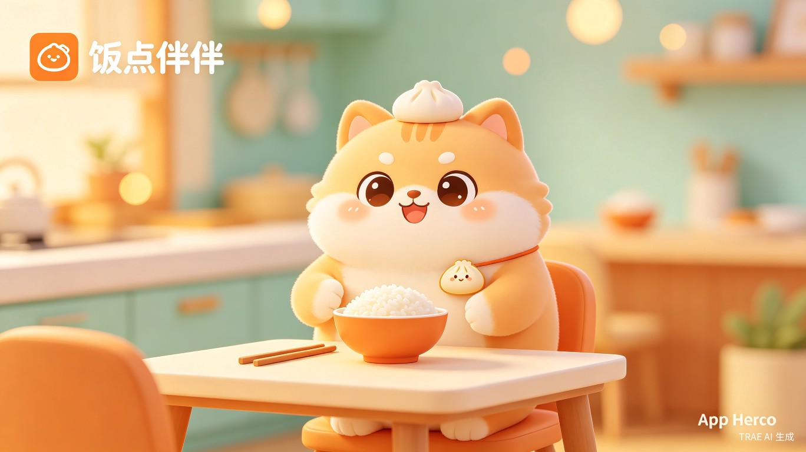
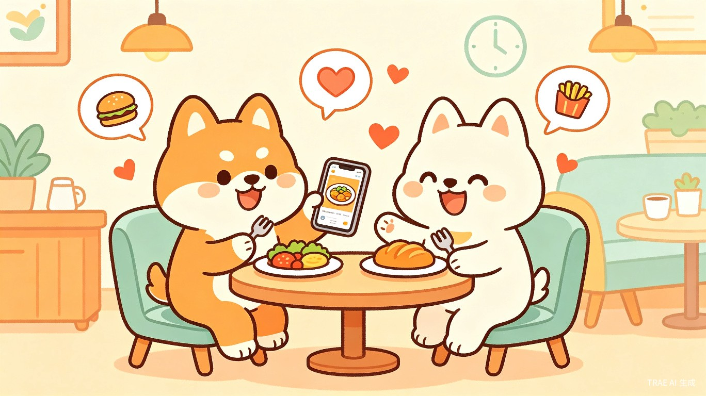
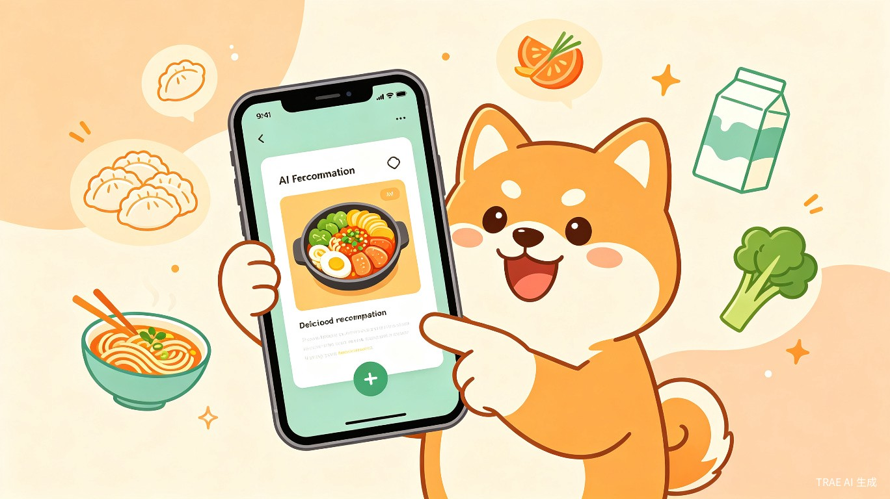
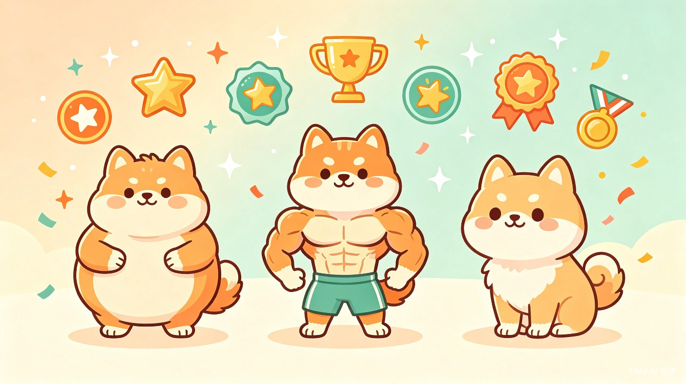

当代年轻职场人群和大学生群体面临高频的饮食决策疲劳。据观察，"今天吃什么"是每天被重复提问最高频的生活问题之一。外卖平台解决了"送到"的问题，但没有解决"选什么"的决策负担；饮食记录类App侧重健康管理，却缺乏情感温度和社交连接。
与此同时，虚拟陪伴经济正在快速增长。用户愿意为有情感价值的数字伴侣投入时间和情感，但市面上多数产品聚焦于游戏或聊天场景，将"饮食"这一高频刚需与"萌宠陪伴"结合的产品几乎空白。
每天花15-30分钟纠结吃什么，选择外卖时滑动屏幕超过50次，最终却常选到不满意的餐品。
工作/学习忙碌时忘记吃饭，或随便应付，长期导致胃部问题和精力下降。
传统饮食记录App冷冰冰，打开几次后便放弃，无法形成持续习惯。
与异地好友缺少日常互动契机，想分享生活却找不到合适的由头和场景。
若缺乏有效的饮食关怀工具，用户将持续面临饮食决策消耗、不规律进餐带来的健康风险，以及数字化生活中日益加剧的孤独感。对于平台而言，这意味着错失一个高频、高粘性、强情感连接的用户入口。
饭点伴伴是一款以"萌宠陪伴+AI饮食推荐+社交分享"为核心的移动应用。产品通过一只专属萌宠作为情感纽带，在饭点主动提醒用户进餐，基于用户画像和上下文智能推荐餐品，鼓励用户记录饮食（repo），并围绕饮食行为构建游戏化的宠物成长和社交互动体系。
让"好好吃饭"从一种负担变成一种期待，让每一餐都有陪伴，让食物成为连接人与生活的温暖媒介。
| 目标维度 | 具体目标 | 衡量指标 |
|---|---|---|
| 用户粘性 | 成为用户每日打开的饮食决策第一站 | DAU/MAU ≥ 40%，人均日打开次数 ≥ 2 |
| 推荐效果 | AI推荐被采纳率超过用户自主选择的满意度 | 推荐采纳率 ≥ 35%，推荐好评率 ≥ 80% |
| 记录习惯 | 建立持续饮食记录习惯 | 7日留存率 ≥ 50%，人均周记录次数 ≥ 5 |
| 社交传播 | 通过分享机制实现自然增长 | 分享率 ≥ 15%，邀请转化率 ≥ 8% |
| 维度 | 职场年轻人 (22-30岁) | 大学生 (18-25岁) |
|---|---|---|
| 核心场景 | 工作日午餐/晚餐决策，加班餐，周末聚餐 | 食堂选择，外卖点餐，宿舍快手菜 |
| 决策因素 | 时间效率、口味偏好、健康考量、社交需求 | 性价比、口味、便捷性、新奇感 |
| 痛点强度 | 高 - 时间紧、选择多、容易随便应付 | 中 - 预算有限、容易吃腻、想尝试新品 |
| 技术熟练度 | 高 - 习惯使用各类App | 高 - 数字原住民 |
| 付费意愿 | 中 - 愿为便利和体验付费 | 低 - 偏好免费，对广告容忍度较高 |
工作日11:30，用户正在开会，手机弹出萌宠通知："主人，午饭时间到啦！今天会议这么忙，要不要试试楼下新开的轻食店？"用户打开App，看到基于"忙碌+轻食偏好+工作地点"的推荐。
用户吃完午餐，打开App发送repo："还是之前那家店吃的叉烧饭"。萌宠开心地"吃"下这顿饭，体型微微变化。用户获得"连续记录3天"徽章。
用户周末做了一顿丰盛的晚餐，拍照repo并生成卡通图，一键分享给好友。好友收到后，自己的萌宠也"闻到香味"，提醒好友该吃饭了。
周日晚上，App推送周报："本周你吃了4次川菜，有点上火哦~下周试试清淡一点的？"附带推荐菜谱和购买清单。
| 竞品 | 产品定位 | 核心功能 | 短板 |
|---|---|---|---|
| 薄荷健康 | 健康饮食管理工具 | 卡路里计算、营养分析、食谱库 | 冷冰冰的工具感，缺乏情感连接和社交 |
| 小红书 | 生活方式分享社区 | 美食笔记、探店分享、菜谱教程 | 信息过载，决策成本高，无个性化推荐 |
| 美团/饿了么 | 外卖交易平台 | 外卖点餐、配送服务 | 纯交易导向，无陪伴感和记录价值 |
| 记账类App (如随手记) | 财务记录工具 | 日常记录、数据统计 | 场景不匹配，无饮食专属设计 |
| # | 模块 | 功能描述 | 优先级 |
|---|---|---|---|
| 1 | 萌宠系统 | 专属萌宠陪伴，包含形态变化、饥饿提醒、互动反馈。宠物形态随用户饮食记录动态变化（胖/瘦/强壮等），是产品的情感核心 | P0 |
| 2 | 饭点提醒 | 基于用户设置的饭点时间和地理位置，由萌宠推送个性化提醒。支持自定义提醒时间、重复规则、免打扰模式 | P0 |
| 3 | AI推荐引擎 | 结合用户画像（籍贯、工作地点、口味偏好、饮食历史）、上下文（时间、天气、用户输入的抽象描述）进行智能菜品/餐厅推荐 | P0 |
| 4 | 饮食记录 (Repo) | 支持文字、图片、语音多种方式记录每餐。文字描述可由AI生成卡通配图。记录后触发宠物"进食"动画和状态更新 | P0 |
| 5 | 购买清单 | 当用户选择"在家做"时，基于推荐菜谱自动生成食材购买清单，支持勾选和分享 | P1 |
| 6 | 徽章系统 | 通过解锁徽章获得新功能（皮肤、昵称等）。徽章覆盖饮食行为（连续同菜品、肉食爱好者等）、记录习惯、社交互动等维度 | P1 |
| 7 | 饮食周报/月报 | 定期生成饮食总结，从健康、规律、心情等维度分析，给出建议。包含可视化图表和宠物状态回顾 | P1 |
| 8 | 好友系统 | 添加好友，查看好友饮食动态，推送菜谱/餐厅，发送吃饭提醒，宠物互动 | P1 |
| 9 | 电商导流 | 推荐菜品/食材时，关联外卖平台或生鲜电商的购买链接，获取佣金 | P2 |
| 10 | 用户画像管理 | 用户可维护个人饮食档案：籍贯、工作地点、口味偏好、忌口、过敏源等，作为AI推荐的基础输入 | P0 |
业务逻辑：
交互逻辑：
flowchart TD
A[用户输入/触发] --> B{推荐类型判断}
B -->|饭点提醒| C[时间+位置+历史偏好]
B -->|主动询问| D[自然语言理解]
B -->|食材补齐| E[冰箱清单分析]
C --> F[推荐排序算法]
D --> F
E --> F
F --> G[生成推荐结果]
G --> H[用户反馈收集]
H --> I[模型迭代优化]
输入维度：
| 维度 | 数据来源 | 示例 |
|---|---|---|
| 用户画像 | 注册信息+历史记录 | 籍贯四川、工作地点中关村、偏好辣味、不吃香菜 |
| 上下文 | 时间/天气/位置 | 工作日中午、雨天、距离500m内 |
| 用户输入 | 自然语言描述 | "中午开会好忙，想吃点快的" |
| 历史记录 | 过往repo数据 | 上周吃了3次轻食、最喜欢某家店的叉烧饭 |
| 食材清单 | 用户录入的家中食材 | 鸡蛋、番茄、面条 |
推荐场景示例：
业务逻辑：
边界与异常：
| 徽章类别 | 徽章示例 | 解锁条件 | 奖励 |
|---|---|---|---|
| 饮食偏好 | "川菜钟情户" | 连续7天记录川菜 | 宠物辣椒配饰 |
| 饮食偏好 | "肉食大户" | 累计记录肉类菜品50次 | 宠物肉骨头道具 |
| 记录习惯 | "打卡达人" | 连续30天每日记录 | 专属宠物皮肤 |
| 记录习惯 | "早起鸟" | 连续7天在8点前记录早餐 | 宠物早起帽子 |
| 社交互动 | "分享达人" | 累计分享10次给好友 | 专属聊天气泡 |
| 社交互动 | "美食向导" | 累计给好友推荐被采纳20次 | 宠物向导披风 |
| 探索发现 | "尝鲜家" | 累计尝试20种不同菜系 | 宠物探险背包 |
| 健康管理 | "轻食主义者" | 连续14天记录轻食 | 宠物瑜伽垫 |

业务逻辑：
| 维度 | 定义 | 目标阈值 |
|---|---|---|
| 意图识别准确率 | 正确理解用户自然语言描述的用餐需求 | ≥ 85% |
| 推荐相关性 | 推荐结果与用户画像和上下文的匹配度 | ≥ 80% |
| 推荐采纳率 | 用户实际选择推荐结果的比例 | ≥ 35% |
| 生图质量 | AI生成配图与描述的一致性、美观度 | 用户好评率 ≥ 75% |
| 响应速度 | 从用户输入到推荐结果返回的耗时 | ≤ 2秒 |
离线评估：构建标准测试集，覆盖常见用餐场景（忙碌、没胃口、庆祝、快手菜、食材补齐等），定期跑测意图识别和推荐质量。
人工审核：对AI生成的配图和推荐结果进行抽样审核，标注bad case并归档。
在线反馈：收集用户对推荐的"采纳/不采纳"行为、对生成图片的"喜欢/重新生成"操作、以及主动反馈（thumbs up/down）。
| 指标类型 | 指标名称 | 定义 | 目标值 |
|---|---|---|---|
| 北极星 | 周活跃留存率 | 本周活跃且下周仍活跃的用户占比 | ≥ 45% |
| 过程 | 饭点提醒点击率 | 点击提醒通知进入App的占比 | ≥ 30% |
| 过程 | 推荐采纳率 | 用户选择推荐结果的次数/总推荐次数 | ≥ 35% |
| 过程 | Repo提交率 | 收到提醒后24小时内提交repo的占比 | ≥ 40% |
| 过程 | 人均周Repo数 | 活跃用户平均每周提交repo次数 | ≥ 5 |
| 社交 | 分享率 | 活跃用户中每周至少分享1次的占比 | ≥ 15% |
| 商业 | 电商导流点击率 | 点击推荐中购买链接的占比 | ≥ 8% |
关键事件：App打开、提醒展示、提醒点击、推荐请求、推荐展示、推荐点击/采纳、Repo提交、图片生成、分享、好友添加、徽章解锁、宠物互动。
flowchart LR
subgraph Client
A[React Native App]
end
subgraph Backend
B[API Gateway]
C[User Service]
D[Recommendation Service]
E[Pet State Service]
F[Social Service]
end
subgraph AI
G[LLM - 意图理解]
H[Recommendation Model]
I[Image Generation]
end
subgraph Data
J[(User DB)]
K[(Food DB)]
L[(Repo DB)]
end
A --> B
B --> C & D & E & F
D --> G & H
C --> J
D --> K & L
E --> J & L
F --> J & L
G --> I
| 风险 | 概率 | 影响 | 缓解策略 |
|---|---|---|---|
| AI推荐准确度不达预期 | 中 | 高 | 建立规则兜底，人工标注迭代，A/B测试验证 |
| AI生图成本过高 | 中 | 中 | 限制每日免费次数，超量付费；优化prompt降低token消耗 |
| 用户留存不及预期 | 中 | 高 | 强化游戏化设计，增加社交粘性，定期推送个性化内容 |
| 电商导流合规风险 | 低 | 中 | 明确标注广告性质，避免虚假宣传，建立审核机制 |
| 竞品快速跟进 | 高 | 中 | 快速迭代建立品牌认知，强化社区氛围形成壁垒 |

